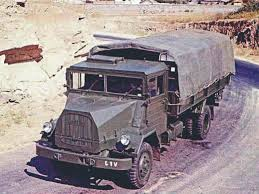

Service History
- Entry into service :
The Shaktiman truck entered service with the Indian Army in the 1950s and quickly became a staple
in military logistics due to its reliability and adaptability in various terrains.
- Mjaor Operation :
The Shaktiman played a crucial role in supporting the Indian Army during the 1962 Sino-Indian War, the 1965 and
1971 Indo-Pak Wars, and subsequent operations. It was widely used for troop transport, supply runs, and equipment hauling across mountainous, desert, and rugged terrains.
- Retirement:
With newer trucks entering service, such as the Ashok Leyland Stallion, the Shaktiman was gradually phased out starting in the early 2000s.
However, many units continued to be used in non-combat roles and in remote areas until more recently due to their durability.
Technical Specifications
- Weight : Gross vehicle weight approximately 10 tons, with a payload capacity of around 4-5 tons.
- Engine : Powered by a6-cylinder MAN diesel engineproducing approximately 90-100 horsepower.
- Speed : Capable of reaching a top speed of about 60-70 km/h.
- Capacity :
- Troop Transport : Could carry up to 20 troops in the rear compartment or substantial cargo loads.
- Towing : Frequently used to tow artillery, such as field guns, or transport other heavy equipment.
- Armor : The Shaktiman was unarmored, designed purely for logistical support rather than combat roles.
- Range : Operational range of approximately 500 km on a full tank, depending on the load and terrain.
- Crew : Operated by a driver and co-driver, with additional capacity in the rear cargo compartment.
Historical Significance
The Shaktiman truck is significant as one of the longest-serving military trucks in India’s defense forces,
providing dependable logistics support across a variety of environments. Known for its ruggedness and ease of maintenance, the Shaktiman became a symbol
of Indian Army logistics, especially in remote and challenging terrains. Its capability to handle heavy loads and traverse difficult terrains made it indispensable in
military logistics.
Notable Missions
- 1962 Sino-Indian War: Shaktiman trucks were heavily relied upon for transporting supplies, ammunition, and
reinforcements to forward areas, often under harsh conditions in the Himalayan terrain.
- 1965 and 1971 Indo-Pak Wars: The Shaktiman continued to prove its reliability, playing a key role in logistics operations.
It was used extensively for moving troops, ammunition, and essential supplies to border areas and conflict zones.
- Peacetime and Counter-Insurgency Operations:The Shaktiman was used widely for regular patrols, humanitarian
aid missions, and counter-insurgency operations across India, especially in mountainous and border regions.